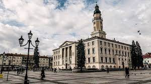

Дрогобич:місто солі,історії та натхнення

-
Загальна інформація
-
Дрогобич:
місто у Львівській області на заході україни.
- Сьогодні місто відоме як мала батьківщина Юрія Дрогобича, Івана Франка та Бруно Шульца.
- В місті діяли численні нафтопереробні підприємства.
-
Розташоване неподалік Карпат,що робить його привабливим для туристів.
- Він є центральним містом Прикарпатської агломерації
- Територія міста становить 31,93 км².
-
Географічне розташування
-
Знаходиться в передгір’ї Карпат.
- Клімат — помірно континентальний з м'якою зимою і теплим літом
- Найгарячіші місяці — липень і серпень
-
Поруч розташовані курортні міста, зокрема Трускавець.
- Дрогобич розміщений в південно-західній частині Львівської області на річці Тисмениці
- Hа межі Наддністрянської рівнини та Карпатського передгір'я.
-
Історія міста
-
Перша письмова згадка датується XI століттям.
- Згідно з археологічними даними, місто виникло в період Київської Русі.
- Про існування міста біля джерел ропи свідчить факт, зафіксований в 1106 році в Києво-Печерському патерику.
-
У середньовіччі місто стало важливим центром торгівлі.
- Дрогобич мав замок з земляними фортифікаційними укріпленнями.
- В середині XV ст. в місті збудували католицький костел Святого Бартоломея.
-
Солеваріння
-
Дрогобич відомий своїми солеварнями.
- «Дрогобицький солевиварювальний завод» — один з найстаріших у Європі.
- солевиварювальний завод та найстаріше постійно діюче підприємство України.
-
Сіль була одним із головних джерел доходу міста.
- Сучасний Дрогобич не перестає дивувати своїми стародавніми таємницями.
- У паспорті заводу вказано дату заснування 1250-й рік.
-
Відомі постаті
-
Іван Франко — видатний український письменник, який народився неподалік міста.
- Видатний український поет Іван Франко народився 26 серпня 160 років тому у селі Нагуєвичі на Львівщині.
- Франко на сьогодні є єдиним українським поетом, який номінувався на здобуття Нобелівської премії з літератури.
-
Висновок
-
Дрогобич — це місто з багатою історією та унікальною культурою.
- Відтак, вже в 2017 році місто Дрогобич за рейтингом Transparency International Ukraine потрапив у десятку найбільш прозорих міст України.
- У Вересні 2017 року місто було приєднано до Міжнародної Хартії Відкритих Даних.